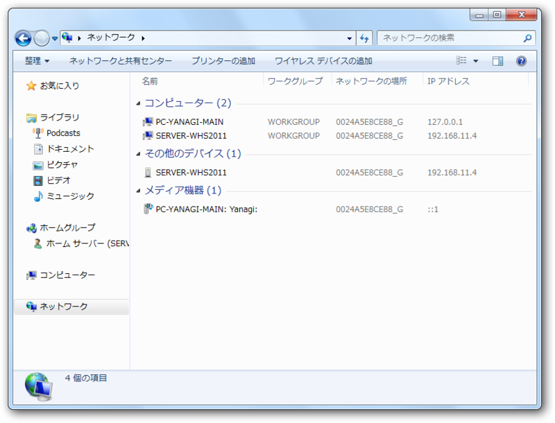

Buffalo WZR-HP-AG300H で Windows Home Server 2011 を外部に公開する
公開日：

ウチのネットワーク。ほんとは、ここに MacBook Pro だの Windows Phone だの iPad だの iPhone だのもぶら下がっているが、基本的にはバッファロー製のルーター WZR-HP-AG300H を介してインターネットに繋がっている。けれど、このルーター、UPnP に対応していないだの何だので *1、 Windows Home Serevr では自動でリモートアクセス構成をセットアップできない。なので、手動で公開してあげることになる。
1. Windows Home Server のIPアドレスを固定する
まず、［Internet/LAN］－［DHCPリース］とたどって、WHS機のIPアドレスを手動割り当てに変更する。

WHS機のIPアドレスがわからない場合は、［ステータス］－［クライアントモニター］に進めばよい。ここでは、SERVER-WHS2011 に 192.168.11.4 が割り当てられているのがわかる。無論、IPCONFIG コマンドで調べてもいいし、エクスプローラーでも調べられる。

2. ポートフォワーディングの設定

続いて、ポートフォワーディングの設定を行う。WZR-HP-AG300H では「ポート変換」と呼ばれており、［ゲーム＆アプリ］設定で変更できる。要は特定のポートに対するリクエストへ応えるマシンを指定してあげるというわけ。
今回の場合は、HTTP（80番）とHTTPS（443番）に対するリクエストが来たら、ルーターではなくWHS機が応答するように設定してあげる。先代のWHS機ではリモートデスクトップ接続のポートも開ける必要があったみたいだけれど、2011ではその必要はないようだ。
3. ドメインの指定

あとは、ネットワークにドメインを割り当てる。ダッシュボードにある［サーバーの設定］ボタンをクリックして、現れるダイアログで［リモート Web アクセス］を選択する。あとは……まぁ、やってみればわかると思う。ここでは https://<任意のID>.homeserver.com/ のドメインを取得した*2。
2. の設定に失敗していると、ネットワーク外から https://<任意のID>.homeserver.com/ へのアクセスでルーターの設定画面が開いてしまうと思う*3。ちゃんと WHS のWebインターフェイスが開けば成功。おつかれさまでした。
バッファローのルーター、IE9でデザイン崩れるの何とかならないかな！
— だるやなぎさん (@daruyanagi) 3月 26, 2012